Hello, I'm
Simone Candido
I work with

What they say about me
g
Computer Engineer | IoT | Full-Stack Developer
Computer Engineer pursuing a Double MSc at EURECOM and Politecnico di Torino, with a strong foundation in networking, IoT, and full-stack development. Ranked in the top 5% of students. Hands-on experience in AI/ML research (5G O-RAN), production-grade web applications, and embedded systems. Known for autonomy, technical ownership, and the ability to independently master new technologies.
What I work with
My academic path
EURECOM — Sophia Antipolis, France
Sep 2025 – Feb 2027 (Expected)
Erasmus+ Double Degree. Specialization in IoT and Wireless Communications (5G/6G). First semester GPA: 18.29/20 — all A/A+ grades.
Politecnico di Torino — Turin, Italy
Sep 2024 – Feb 2027 (Expected)
Computing and Network Infrastructures. Top 5% of students (Ref. Prof. G. Marchetto). Key courses: Enterprise Networks, System and Device Programming, Software Engineering.
Politecnico di Torino — Turin, Italy
Sep 2021 – Jul 2024
Final Grade: 108/110 — Top 11.8% of graduates (Diploma Supplement). 4× cum laude grades including Signal Theory and Automatic Control.
Where I've worked
Aug 2019 – Present
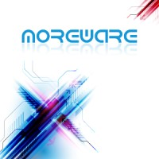
Moreware IT — Remote
6+ years authoring technical articles and tutorials on Linux, Arduino, Raspberry Pi, and Embedded Systems. Translating complex technical concepts into accessible content for a broad audience. Managing editorial deadlines and industry collaborations.
Mar 2024 – Jun 2024
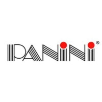
Panini S.p.A. — Turin
Developed a dashboard for managing EverneXt scanners using HTML, CSS, JavaScript, tiff.js, SignalR for real-time communication, and Bootstrap for responsive design. Integrated asynchronous features and API calls. Implemented an approach based on ASP.NET Core MVC, Razor Pages, and Azure Functions for the cloud. Testing and validation were conducted, and the code was documented, improving the efficiency and management of scanning processes.
Mar 2022 – Jun 2022
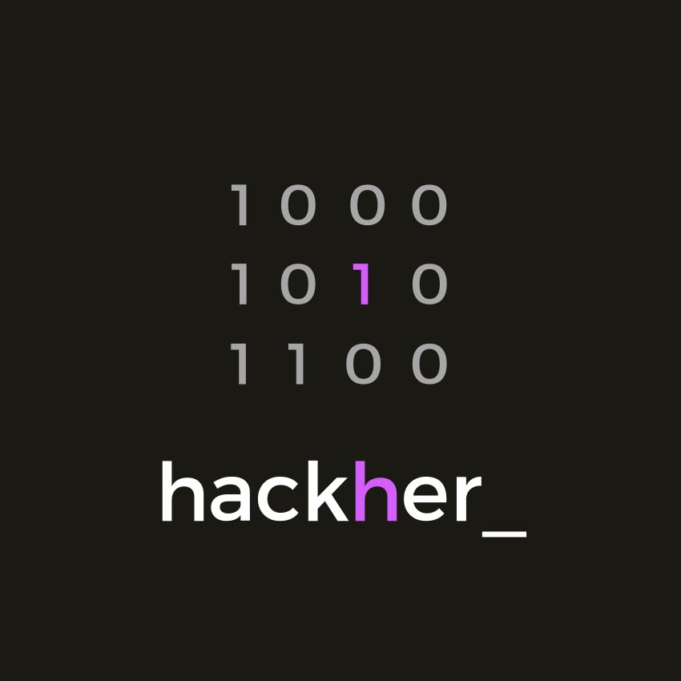
Bridge The Gaps — Turin
Organized and delivered IT workshops, hackathons, and educational events for various age groups in electronics, robotics, and computer science. Worked within a young, multidisciplinary team of project managers, event coordinators, and IT engineers.
Sep 2021 – Jun 2022
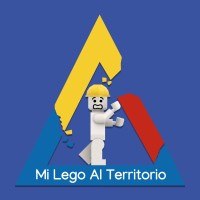
Mi Lego Al Territorio — PoliTo Student Team
Built interactive models using LEGO bricks, Arduino, and Raspberry Pi to simulate natural hazards (earthquakes, floods) for awareness campaigns. Integrated a real seismograph into educational demonstrations. Promoted hydrogeological and seismic risk education across universities and institutions.
Jul 2021 – Aug 2021
Ortourbano — Manfredonia
Designed and led a robotics workshop for children, teaching STEM fundamentals through hands-on projects. Focused on creativity, problem-solving, and collaborative brainstorming — guiding students from idea to working prototype with minimal instructions.
Jan 2017 – Mar 2020
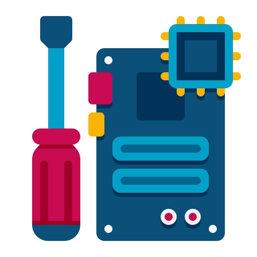
Freelance — Manfredonia
Assembled and repaired desktop and laptop PCs. Created custom builds from scratch tailored to client budgets and needs. Diagnosed hardware and software issues through systematic troubleshooting.
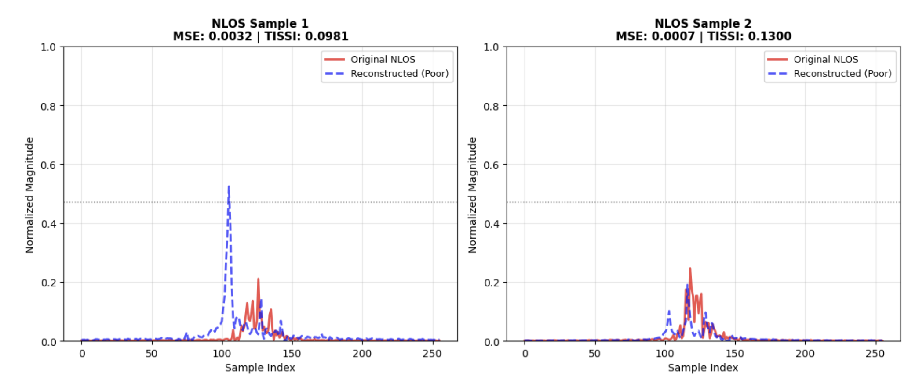
RESEARCH — EURECOMDeveloped a Beta-VAE trained exclusively on LoS Channel Impulse Response data from the GEO-5G testbed at EURECOM. The model detects NLoS signals as out-of-distribution anomalies using the TISSI metric, achieving 88.97% accuracy (balanced) and 97.62% (realistic indoor conditions) — surpassing the 85% UWB benchmark. Deployed as a C++ xApp on the FlexRIC Near-RT RIC via LibTorch, processing 4-antenna CIR measurements in real-time (~59ms latency) with 99.7% NLoS detection on emulator testing.
Private repository — EURECOM semester project
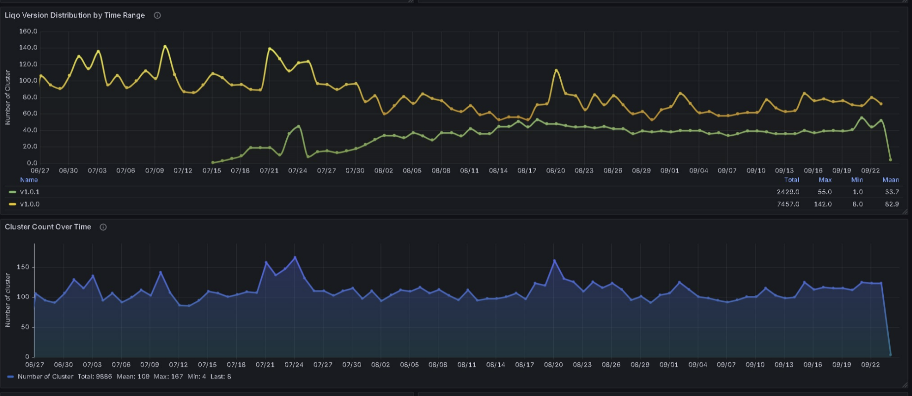
BACKEND — PoliToBuilt a monitoring system to migrate and analyze telemetry data from Kubernetes clusters. Engineered a Go backend with GORM and GJSON to extract data from AWS DynamoDB, transform it into a normalized relational schema (9 correlated tables), and load it into PostgreSQL via CloudNativePG. Implemented hybrid sync strategies (daily full refresh + incremental sync) handling DynamoDB's 1MB scan limit. Infrastructure orchestrated with Kubernetes/Kind/Docker. Designed advanced Grafana dashboards for cluster performance, geographical distribution, and versioning trends — enabling data-driven decisions for non-technical stakeholders.
Private repository — dashboard screenshots use fictitious data for privacy
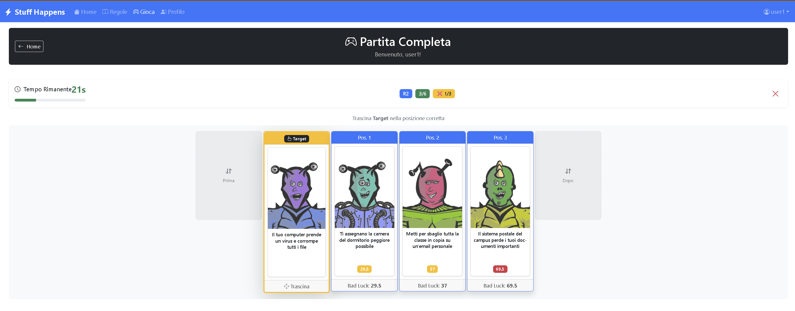
FULL STACKFull-stack card game where players race against a 30-second timer to position cards by Bad Luck Index. Features drag-and-drop gameplay (DnD Kit), secure authentication (Passport.js), and a RESTful API backed by SQLite. Solved cross-origin session management between Vercel frontend and Railway backend by implementing secure SameSite cookie attributes and proxy trust. Includes demo mode, persistent history tracking, and server-side timer validation to prevent cheating.
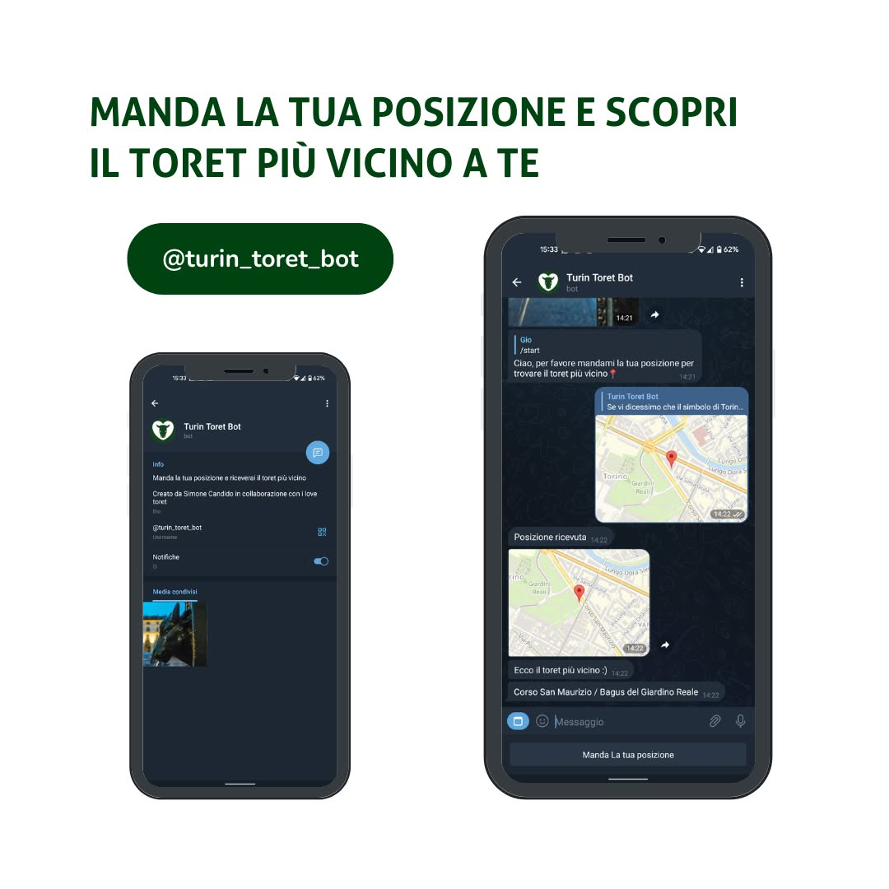
OPEN SOURCETelegram bot to find the nearest public drinking fountain in Turin by sending your GPS location. Built with Python using Telegram Bot API and a custom geolocation algorithm that calculates distances from a live database of fountain coordinates fetched from the I Love Toret API. Officially featured on ilovetoret.it and developed in collaboration with the "I Love Toret" civic association. Hosted on Render.com for 24/7 availability.
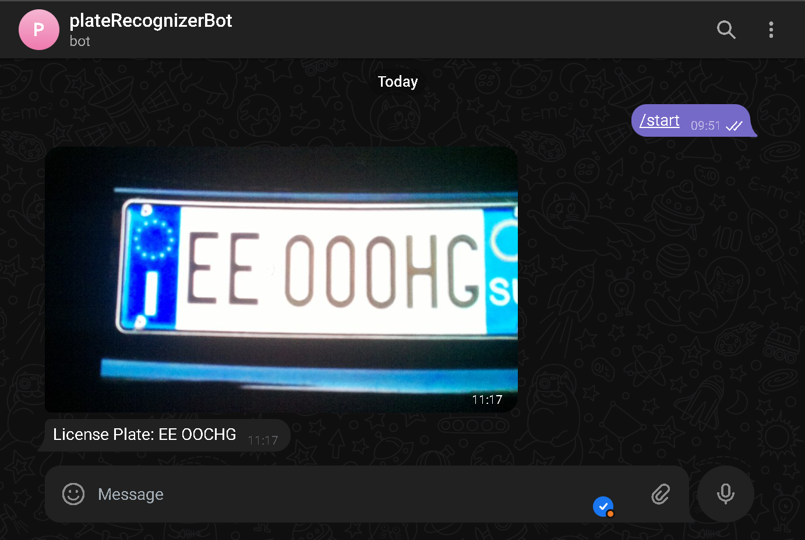
IoT / HARDWAREAutomated license plate recognition system built with Raspberry Pi CM4 and the Ochin V2 carrier board. Uses OpenCV for plate detection via edge detection and contour analysis, and Tesseract OCR for character recognition. Results are sent in real-time to a Telegram bot with photo and recognized text. Applicable to automated toll systems, security monitoring, and gate access control. Published as a full technical tutorial on moreware.org (955+ views).
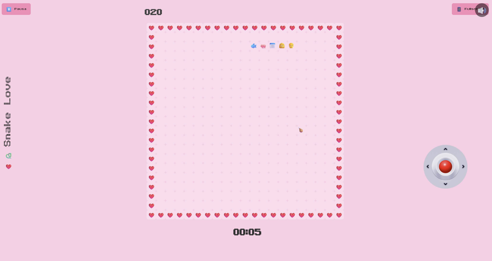
FUN / CREATIVEA romantic twist on the classic Snake game — the snake grows by eating the most used emojis between you and your loved one. Navigate through the grid, avoid hitting your tail, and enjoy a heartwarming experience with every move. Built as a creative gift project combining gameplay with personalization.
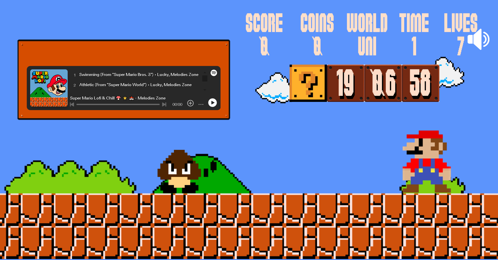
FUN / CREATIVEA fun clock application inspired by Super Mario Bros, enhanced with study-time lofi music. Features animated Mario characters and elements, providing a delightful way to keep track of time while enjoying soothing background music for study sessions.
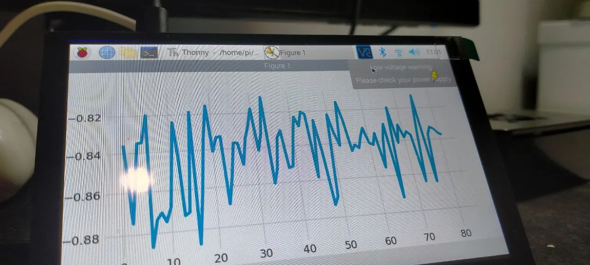
IoT / HARDWAREBuilt a real-time seismograph using a Raspberry Pi and the GY-521 accelerometer/gyroscope module (MPU-6050). Reads vibration data via I2C bus and visualizes live acceleration plots using matplotlib. Used in educational demonstrations with the Mi Lego Al Territorio student team. Published as a full technical tutorial on moreware.org (3,200+ views).
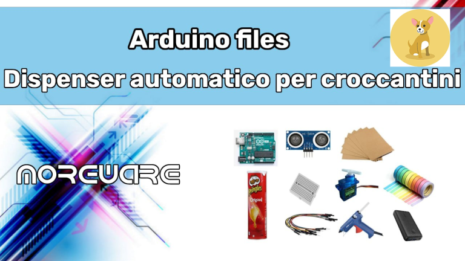
IoT / HARDWAREBuilt an automatic treat dispenser for pets using Arduino, an ultrasonic distance sensor (SR04), and a servo motor. When a pet approaches within 20cm, the servo rotates to release a treat from a Pringles tube. Designed with low-cost, easily available components — no 3D printing required. Published as a tutorial on moreware.org (3,700+ views) with a YouTube video walkthrough.
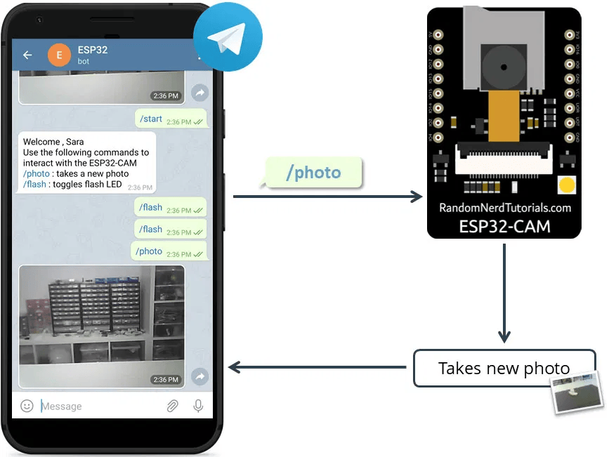
IoT / HARDWARETelegram bot running on ESP32-CAM that captures and sends real-time photos on command. Features flash LED control, authorized user validation, and Wi-Fi connectivity. Published on moreware.org (2,300+ views).
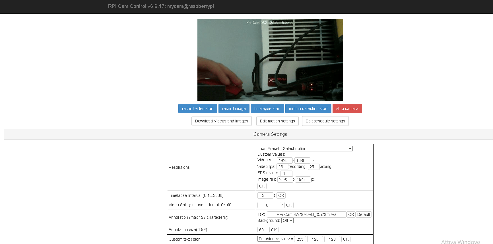
IoT / HARDWAREWeb interface for controlling a Raspberry Pi Camera remotely — with motion detection, time-lapse, video recording, and parameter tuning. Includes a full guide on port forwarding, NAT, and remote access from any device worldwide. Published on moreware.org (3,300+ views).
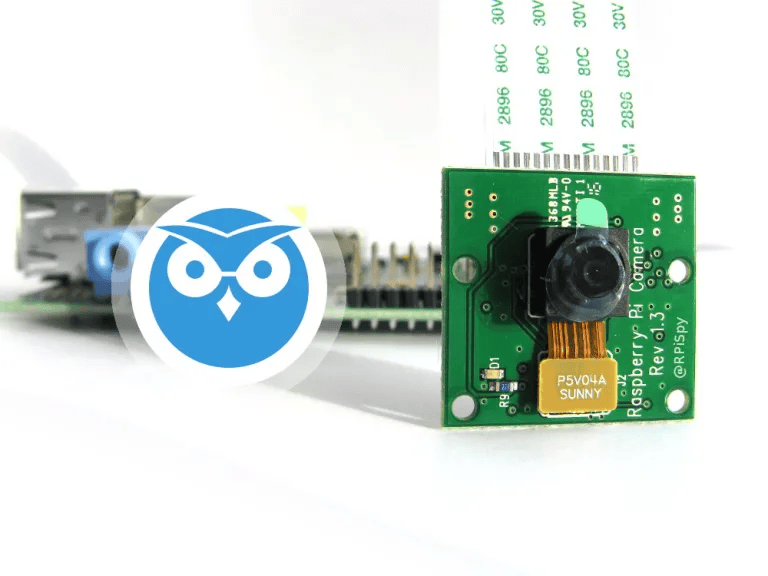
IoT / HARDWAREComplete video surveillance system using MotionEye OS on Raspberry Pi. Features motion detection with email alerts, Wi-Fi configuration, scheduled recording, cloud storage, and remote streaming access. Published on moreware.org (4,300+ views).
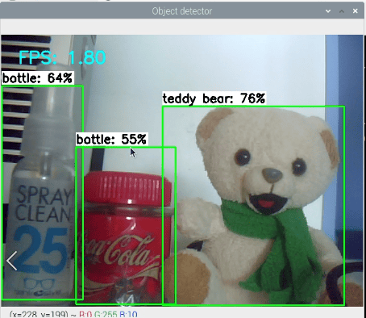
AI / IoTReal-time object detection on Raspberry Pi using TensorFlow Lite and a SSDLite-MobileNet model trained on MSCOCO (80 object classes). Features live webcam feed with bounding boxes and labels. Includes a beginner-friendly introduction to AI, ML, and computer vision. Published on moreware.org (4,800+ views).
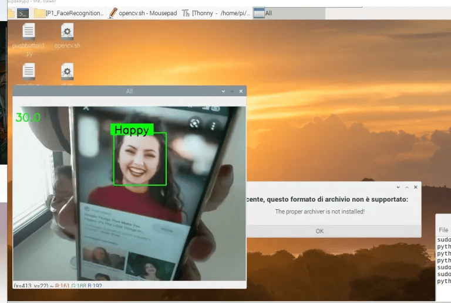
AI / IoTReal-time facial expression recognition system using Raspberry Pi Camera, OpenCV, TensorFlow, and Keras. Detects 6 emotions (Angry, Fear, Happy, Neutral, Sad, Surprise) from live video feed using a pre-trained deep learning model. Published on moreware.org (2,300+ views).
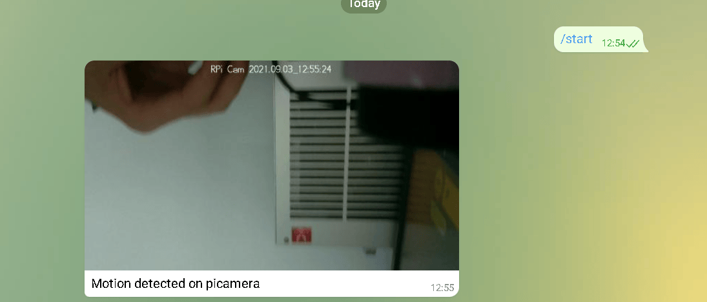
IoT / HARDWARERaspberry Pi Camera system that sends Telegram notifications with photos when motion is detected. Uses MotionEye for detection and custom Bash scripts for Telegram API integration. Features configurable motion thresholds and automated alerts. Published on moreware.org (3,000+ views).
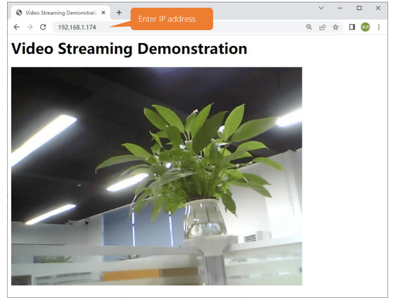
IoT / HARDWAREVideo streaming web server running on ESP32-CAM. Streams live video via Wi-Fi accessible through any LAN browser, with configurable resolution, quality, and camera parameters. Published on moreware.org (2,700+ views).
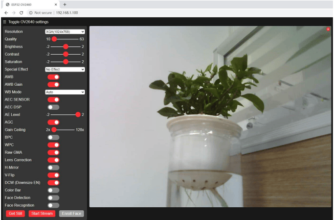
IoT / HARDWARECamera web server on ESP32-CAM with full control panel — adjust brightness, saturation, resolution, flip, and mirror settings via browser. Supports multiple ESP32-CAM board models. Published on moreware.org (2,600+ views).
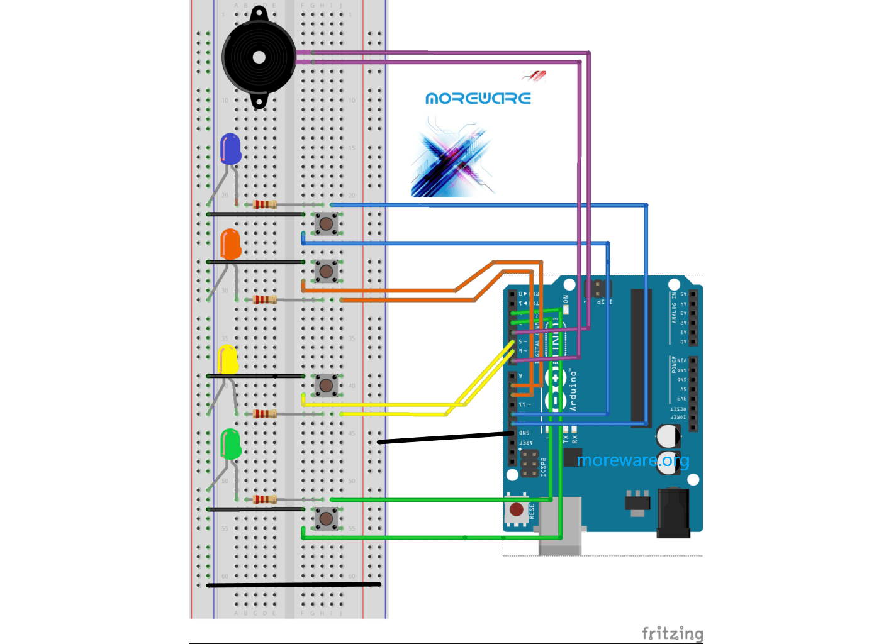
IoT / HARDWAREInteractive Simon Says memory game built with Arduino. Players must replicate LED sequences using buttons, with increasing difficulty over 13 rounds. Features 4 LEDs, 4 buttons, buzzer sounds, and timed responses. Published on moreware.org (3,400+ views).
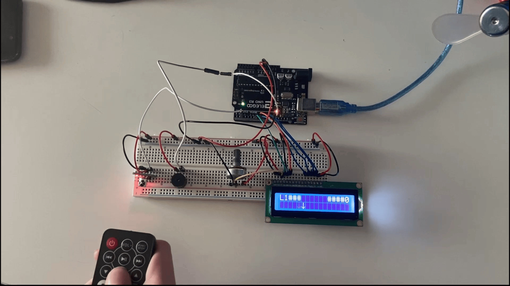
IoT / HARDWAREInteractive game using Arduino, an LCD display, IR receiver, and any TV remote. Players press mapped keys matching symbols scrolling on screen, with increasing speed per level. Features custom key mapping, score tracking, 10 levels, and buzzer feedback. Published on moreware.org (3,500+ views).
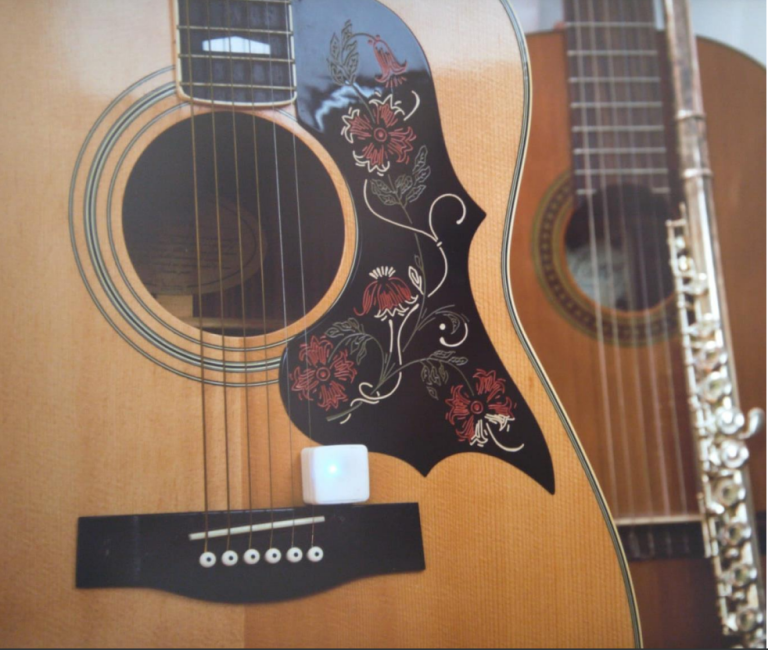
IoTIoT environmental monitoring system for musical instrument storage using BleBricks modular platform. Sends smartphone alerts when humidity falls outside optimal range (45%-55%). No-code setup using MakeApp with If/Then logic interactions. Published on moreware.org (2,000+ views).
Python-based Telegram userbot that acts as a personal secretary. Automatically responds to messages based on Google Calendar availability, parses natural language dates, translates queries with Google Translate, and generates AI-powered responses using Hugging Face (Gemma 2). Built with Telethon for userbot capabilities — unlike standard bot libraries, it operates as a regular Telegram user.
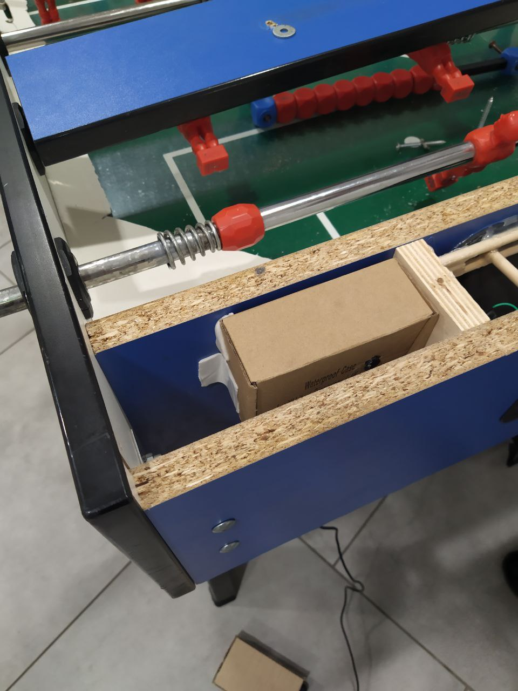
IoT / HARDWAREReal-time digital scoreboard for table football built with ESP32. A laser beam and photoresistor sensor on each goal detect when the ball breaks the light beam — triggering a buzzer and sending the goal event via HTTP to a cloud server (AWS EC2) for live score tracking, like a mini Flashscore for your table football matches. Features JWT-authenticated API calls and Wi-Fi connectivity.
From my blog
Loading articles...
Article series and events
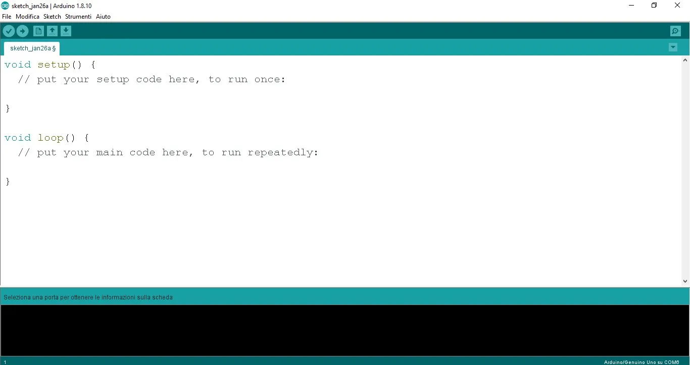
Tutorial Series
A multi-part series teaching C++ programming fundamentals through the Arduino IDE. From variables and loops to functions and libraries — designed to take beginners from zero to building real projects.
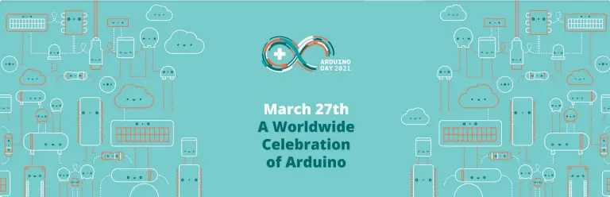
Event
Organized the Arduino Day 2021 online event for Moreware, inviting the most prominent figures of the Italian maker community as guest speakers. Managed event planning, speaker coordination, and live streaming.
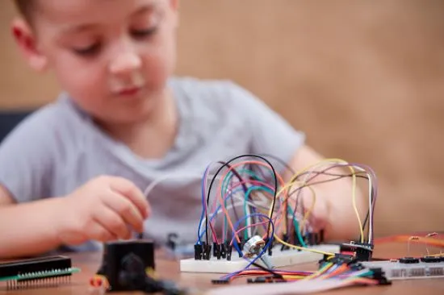
Educational Series
A series of articles explaining Arduino and other educational platforms for children. Designed to introduce young learners to electronics, coding, and robotics through fun, hands-on projects with an accessible approach.
Knowledge sharing
I believe that knowledge only truly grows when it is shared. Over the years, I have dedicated hundreds of hours to writing comprehensive course notes entirely in LaTeX — not just to study, but to build something lasting for others. Some of these notes have been reviewed and officially adopted by professors for future courses. Each document reflects a deep commitment to clarity, rigor, and the craft of technical writing.
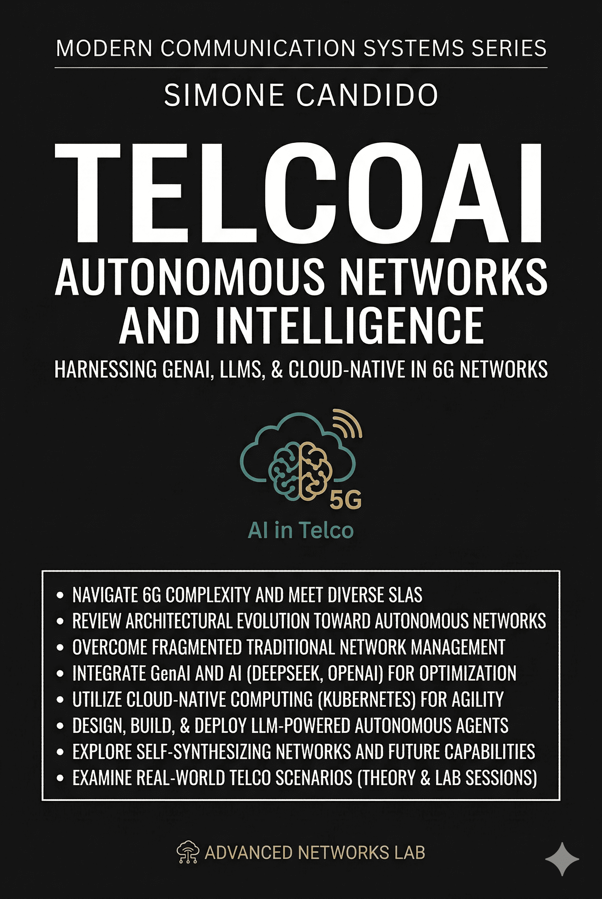
Autonomous agents powered by LLMs for real-time decision-making on cloud-native 5G networks. O-RAN, AI-RAN, GenAI, Kubernetes, network slicing.
📝 Co-written with professor. Adopted for future courses. Open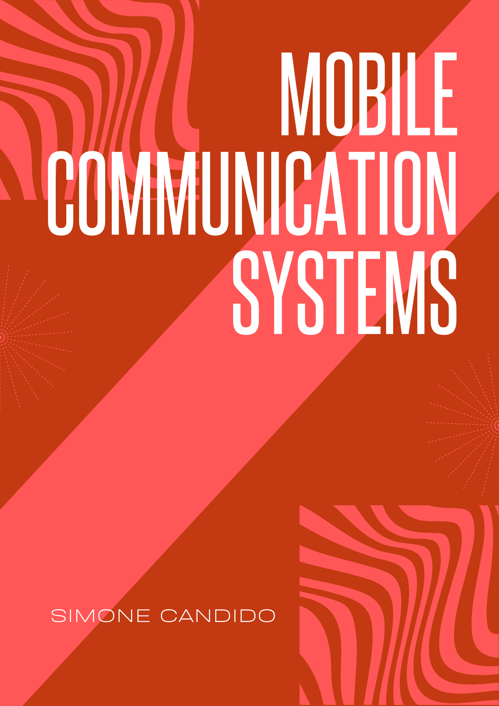
Mobile Communication Systems: 5G Radio Access Network, 3GPP architecture, OFDM, MIMO, beamforming, OpenAirInterface labs.
📝 Reviewed and approved by professor. Adopted for future courses. Open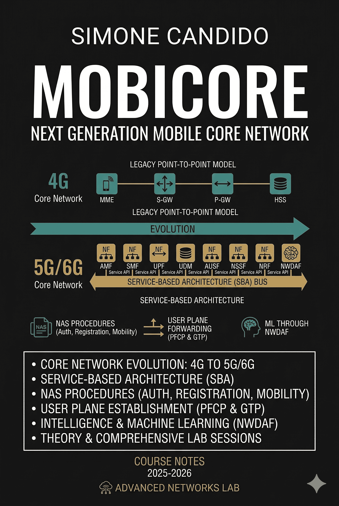
Next-gen Mobile Core Network: 5G/6G Service-Based Architecture, NAS procedures, PFCP, GTP, NWDAF for ML-powered networks.
Open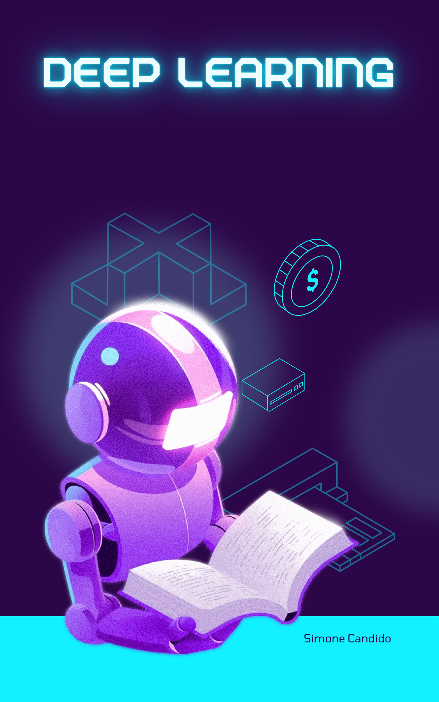
DNNs, CNNs, RNNs, Transformers, autoencoders, energy-based models. Theory, optimization, and hands-on projects with real data.
Open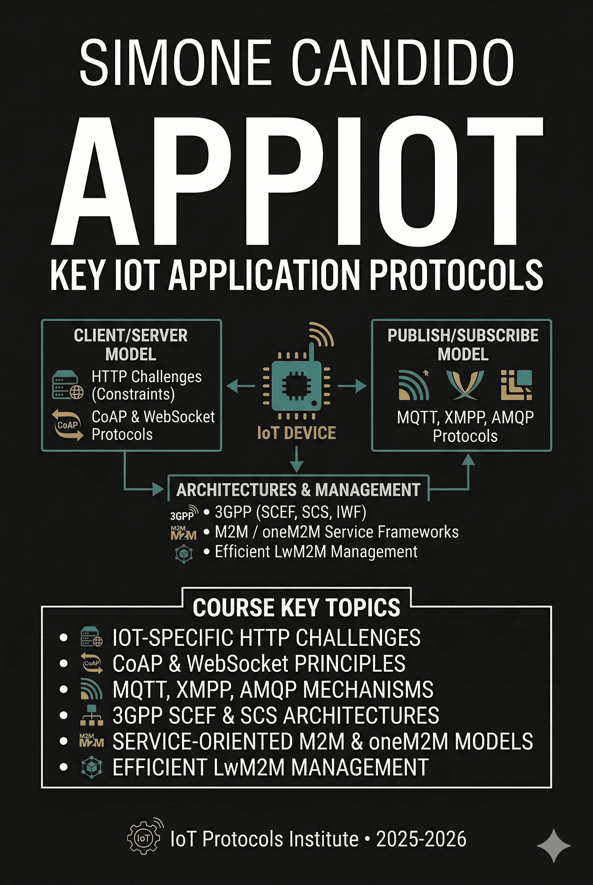
IoT application protocols: CoAP, MQTT, XMPP, AMQP, WebSocket, 3GPP IoT architectures, oneM2M, LwM2M.
Open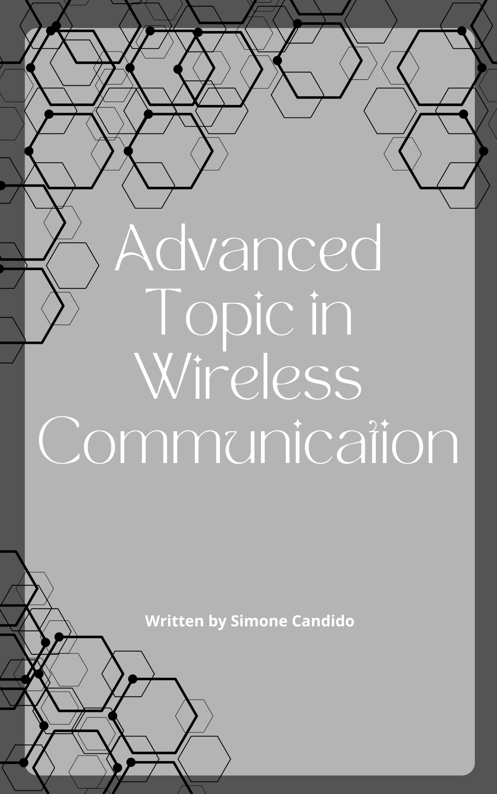
5G hot topics: Massive MIMO, network cooperation, interference management, device coordination. Guest lectures from Intel, Huawei, ETSI.
Open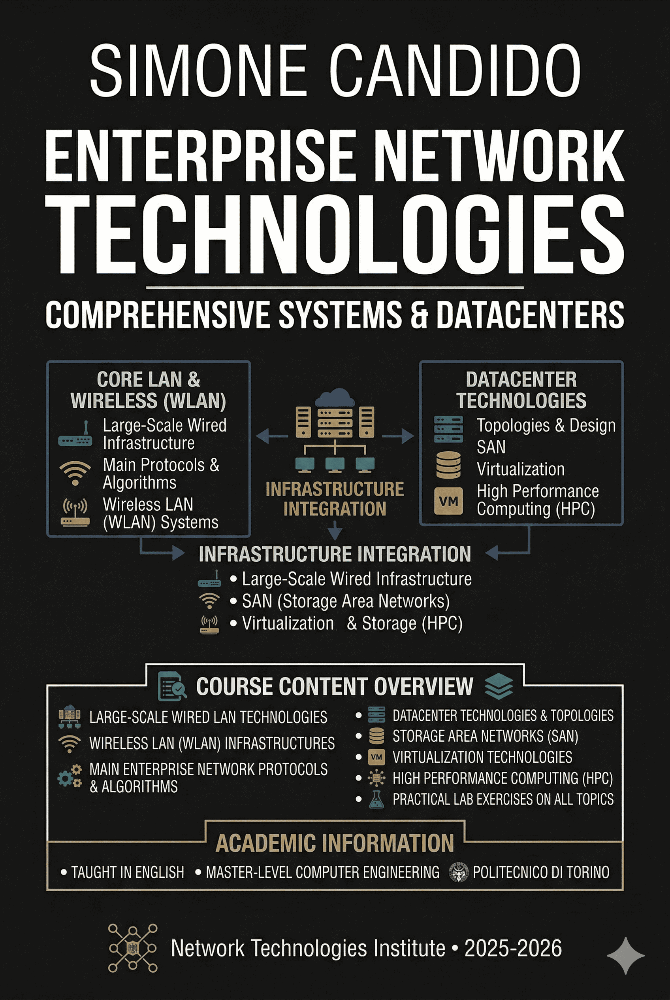
LAN technologies, datacenter topologies, storage area networks, virtualization, high performance computing.
Open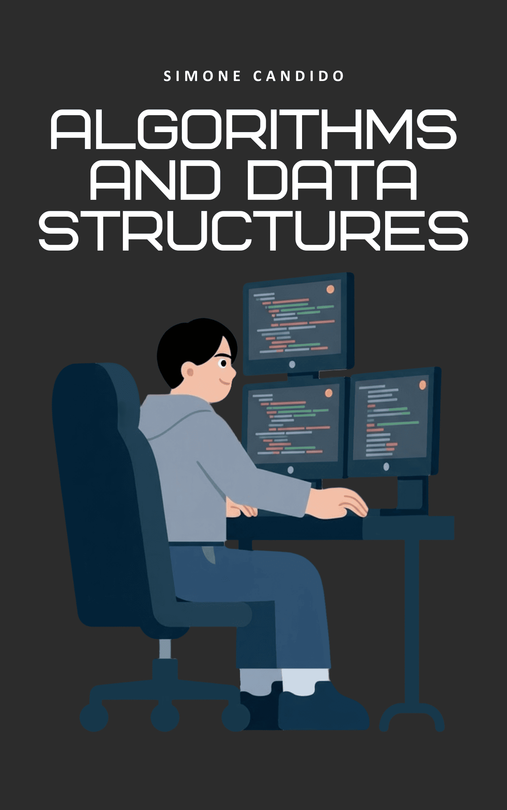
Complete course material in C. Used by hundreds of PoliTo students.
Open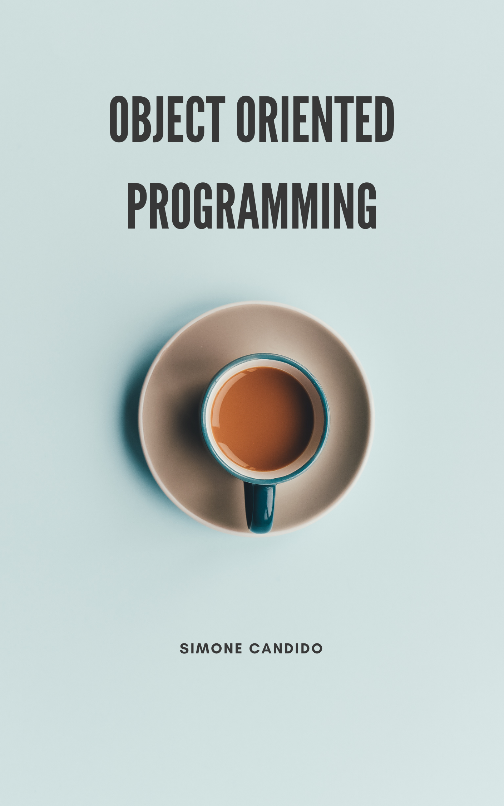
OOP course material. Used by hundreds of PoliTo students.
OpenWhat professors say
Simone demonstrated outstanding academic performance. One of his strengths is his structured and highly organized approach to learning. He is meticulous in mastering every detail of a topic. His ability to manage multiple challenges simultaneously is evident from his completion of four exams in the first available session.
Full Reference LetterHe is very determined and has gained interests in advanced features of computer science, in particular computer networking, data science, and especially their application in IoT. He obtained above-average performance as a direct result of his hard work and strong focus. He ranks in the top 5% of the students I had in my courses.
Full Reference LetterWhat stood out was his reliability, discipline, and the way he brings calm, constructive energy into team settings. He takes accountability seriously, communicates with structure, and consistently contributes to a positive and collaborative atmosphere. In other words, strong technical focus with the leadership behaviours that make teams work.
LinkedIn RecommendationI landed on his blog page and — for example, there's an article on how the RTC works with Arduino — and look how it's done. I mean, in my opinion, you can't do better than this. Everything is there. Beyond that, it's also an opportunity to get in touch with very competent people in this field.
Watch on YouTubeLet's connect